<title>Marko Mitrovic AI Ads</title>
<meta name="claude:viewport-fit-sides" content="cover">
<meta name="description" content="Marko Mitrovic, AI video editor. Performance ads made with AI: drama, UGC and hook variations.">
<link rel="preconnect" href="https://fonts.googleapis.com">
<link rel="preconnect" href="https://fonts.gstatic.com" crossorigin>
<link rel="stylesheet" href="https://fonts.googleapis.com/css2?family=Bricolage+Grotesque:opsz,wght@12..96,500;12..96,700;12..96,800&family=Geist:wght@400;500;600&family=Geist+Mono:wght@400;500&display=swap">
<style>
/* Layout: an editing-suite page. Hero = headline + phone monitor. Each ad = phone player with hook tabs beside an NLE-style "anatomy" track. */
:root{
  --bg:#0d0f12;          /* suite background, cool graphite */
  --panel:#15181d;       /* panels / monitors */
  --panel-2:#1c2027;     /* raised controls */
  --line:#272c35;        /* hairlines */
  --fg:#eeebe4;          /* paper-white text */
  --muted:#8d939e;       /* secondary text */
  --mark:#ffb547;        /* playhead / marker amber, the one accent */
  --clip-v:#8f80f7;      /* video track clip */
  --clip-a:#35c3ae;      /* audio track clip */
  --display:"Bricolage Grotesque", "Arial Narrow", system-ui, sans-serif;
  --body:"Geist", system-ui, -apple-system, "Segoe UI", sans-serif;
  --mono:"Geist Mono", ui-monospace, "SFMono-Regular", Menlo, monospace;
  --r:14px;
  color-scheme:dark;
}
*{box-sizing:border-box}
html{scroll-behavior:smooth}
body{background:var(--bg);color:var(--fg);font-family:var(--body);font-size:16px;line-height:1.55;-webkit-font-smoothing:antialiased}
body::before{content:"";position:fixed;inset:0 0 auto;height:env(safe-area-inset-top,0px);z-index:10;background:var(--bg)}
a{color:inherit}
.wrap{max-width:1180px;margin:0 auto;padding-left:max(20px,env(safe-area-inset-left,0px));padding-right:max(20px,env(safe-area-inset-right,0px))}
.mono{font-family:var(--mono);font-size:12.5px;letter-spacing:.02em}
.eyebrow{font-family:var(--mono);font-size:12px;letter-spacing:.14em;text-transform:uppercase;color:var(--muted)}
:focus-visible{outline:2px solid var(--mark);outline-offset:3px;border-radius:6px}

/* ---------- top bar ---------- */
.top{position:sticky;top:env(safe-area-inset-top,0px);z-index:9;background:color-mix(in srgb,var(--bg) 86%,transparent);backdrop-filter:blur(10px);border-bottom:1px solid var(--line)}
.top .wrap{display:flex;align-items:center;gap:18px;padding-block:12px}
.brand{font-family:var(--display);font-weight:800;font-size:19px;letter-spacing:-.01em;text-decoration:none;white-space:nowrap}
.nav{display:flex;gap:18px;margin-left:auto;font-size:14px;color:var(--muted)}
.nav a{text-decoration:none}.nav a:hover{color:var(--fg)}
.rec{display:inline-flex;align-items:center;gap:8px;font-family:var(--mono);font-size:12px;color:var(--fg);border:1px solid var(--line);border-radius:999px;padding:5px 11px;white-space:nowrap}
.rec i{width:8px;height:8px;border-radius:50%;background:var(--mark);box-shadow:0 0 0 3px color-mix(in srgb,var(--mark) 25%,transparent);animation:blink 1.6s steps(2,start) infinite}
@keyframes blink{to{opacity:.25}}
@media (max-width:720px){.nav{display:none}.rec{margin-left:auto}}

/* ---------- hero ---------- */
.hero .wrap{display:grid;grid-template-columns:minmax(0,1.25fr) minmax(0,.75fr);gap:48px;align-items:center;padding-block:56px 40px}
.hero h1{font-family:var(--display);font-weight:800;font-size:clamp(46px,7.2vw,104px);line-height:.92;letter-spacing:-.035em;margin:14px 0 22px;text-wrap:balance}
.hero h1 em{font-style:normal;color:var(--mark)}
.hero p.lede{font-size:clamp(17px,1.6vw,19px);color:#cfd2d8;max-width:34em;margin:0 0 28px}
.ctas{display:flex;flex-wrap:wrap;gap:12px}
.btn{display:inline-flex;align-items:center;gap:10px;border-radius:999px;padding:13px 20px;font-weight:600;font-size:15px;text-decoration:none;border:1px solid var(--line);background:var(--panel-2);color:var(--fg);cursor:pointer;font-family:var(--body)}
.btn.primary{background:var(--mark);border-color:var(--mark);color:#1b1305}
.btn:hover{filter:brightness(1.08)}
.tools{display:flex;flex-wrap:wrap;gap:8px;margin-top:30px;align-items:center}
.tools span.t{font-family:var(--mono);font-size:12px;color:#c9ccd3;border:1px solid var(--line);border-radius:6px;padding:4px 8px;background:var(--panel)}

/* ---------- phone monitor ---------- */
.phone{position:relative;width:min(300px,78vw);margin-inline:auto;border-radius:38px;padding:10px;background:linear-gradient(160deg,#2a2f38,#121418 60%);box-shadow:0 30px 80px -30px rgba(0,0,0,.8),inset 0 0 0 1px #343a45}
.screen{position:relative;border-radius:29px;overflow:hidden;aspect-ratio:9/16;background:#000;max-width:100%}
.screen video{width:100%;height:100%;object-fit:cover;display:block}
.island{position:absolute;top:10px;left:50%;transform:translateX(-50%);width:84px;height:22px;border-radius:12px;background:#000;z-index:2}
.sound{position:absolute;left:12px;bottom:12px;z-index:3;display:inline-flex;align-items:center;gap:7px;border:0;border-radius:999px;padding:8px 12px;background:rgba(10,11,13,.72);color:#fff;font:600 12.5px var(--body);cursor:pointer;backdrop-filter:blur(6px)}
.sound svg{width:15px;height:15px}
.tc{position:absolute;right:12px;bottom:14px;z-index:3;font:500 11.5px var(--mono);color:#fff;background:rgba(10,11,13,.6);padding:4px 7px;border-radius:6px;font-variant-numeric:tabular-nums}
.hero .phone-cap{margin-top:14px;text-align:center;color:var(--muted);font-size:13px}

@media (max-width:860px){.hero .wrap{grid-template-columns:1fr;gap:36px;padding-block:36px 24px}}

/* ---------- stats strip ---------- */
.strip{border-block:1px solid var(--line);background:var(--panel)}
.strip .wrap{display:grid;grid-template-columns:repeat(4,minmax(0,1fr));padding-block:0}
.stat{padding:22px 18px;border-left:1px solid var(--line)}
.stat:first-child{border-left:0;padding-left:0}
.stat b{display:block;font-family:var(--display);font-weight:700;font-size:clamp(28px,3.4vw,40px);line-height:1;letter-spacing:-.02em}
.stat span{color:var(--muted);font-size:13.5px}
@media (max-width:720px){.strip .wrap{grid-template-columns:repeat(2,minmax(0,1fr))}.stat:nth-child(3){border-left:0;padding-left:0}.stat{border-top:1px solid var(--line)}.stat:nth-child(-n+2){border-top:0}}

/* ---------- section heads ---------- */
section.block{padding-block:84px 24px}
.shead{display:flex;flex-wrap:wrap;align-items:end;justify-content:space-between;gap:16px;margin-bottom:34px}
.shead h2{font-family:var(--display);font-weight:800;font-size:clamp(34px,4.6vw,60px);line-height:.98;letter-spacing:-.03em;margin:8px 0 0;max-width:14em;text-wrap:balance}
.shead p{color:var(--muted);max-width:30em;margin:0}

/* ---------- project ---------- */
.project{display:grid;grid-template-columns:minmax(0,340px) minmax(0,1fr);gap:56px;align-items:start;padding-block:40px 64px;border-top:1px solid var(--line)}
.project:first-of-type{border-top:0}
.player{position:sticky;top:calc(env(safe-area-inset-top,0px) + 76px)}
.player .phone{width:100%;max-width:320px}
.tabs{display:flex;flex-wrap:wrap;gap:6px;margin-top:16px;justify-content:center}
.tab{font:500 13px var(--body);color:#c9ccd3;background:var(--panel);border:1px solid var(--line);border-radius:999px;padding:7px 12px;cursor:pointer}
.tab[aria-selected="true"]{background:var(--fg);color:#111;border-color:var(--fg)}
.tabnote{text-align:center;color:var(--muted);font-size:13px;margin-top:10px;min-height:2.6em}
.tag{display:inline-flex;gap:8px;align-items:center;font:500 12px var(--mono);letter-spacing:.08em;text-transform:uppercase;color:var(--mark)}
.tag::before{content:"";width:10px;height:10px;border-radius:2px;background:var(--mark)}
.project h3{font-family:var(--display);font-weight:800;font-size:clamp(32px,3.8vw,48px);line-height:1;letter-spacing:-.025em;margin:12px 0 14px;text-wrap:balance}
.log{font-size:17.5px;color:#d6d8dd;max-width:36em;margin:0 0 18px}
.meta{display:flex;flex-wrap:wrap;gap:8px;margin-bottom:34px}
.meta span{font:500 12.5px var(--mono);color:#c9ccd3;background:var(--panel);border:1px solid var(--line);border-radius:6px;padding:5px 9px}
.subh{font:600 12px var(--mono);letter-spacing:.14em;text-transform:uppercase;color:var(--muted);margin:0 0 12px}

/* anatomy track (NLE timeline) */
.track{background:var(--panel);border:1px solid var(--line);border-radius:var(--r);padding:14px 14px 12px;margin-bottom:34px}
.ruler{display:flex;justify-content:space-between;font:400 11px var(--mono);color:#646a75;font-variant-numeric:tabular-nums;padding:0 2px 8px;border-bottom:1px dashed var(--line);margin-bottom:10px}
.beats{display:grid;grid-template-columns:repeat(5,minmax(0,1fr));gap:8px}
.beat{display:flex;flex-direction:column;gap:7px;text-align:left;background:var(--panel-2);border:1px solid var(--line);border-radius:10px;padding:6px;cursor:pointer;color:var(--fg);font-family:var(--body);min-width:0}
.beat:hover,.beat.on{border-color:var(--mark)}
.beat img{width:100%;aspect-ratio:9/12;object-fit:cover;border-radius:6px;display:block;background:#000}
.beat .bt{display:flex;justify-content:space-between;gap:6px;font:500 11px var(--mono);color:var(--mark);font-variant-numeric:tabular-nums}
.beat .bn{font-weight:600;font-size:13px;line-height:1.2}
.beat .bq{font-size:12px;color:var(--muted);line-height:1.35}
.lanes{display:grid;gap:4px;margin-top:12px}
.lane{display:grid;grid-template-columns:28px 1fr;gap:8px;align-items:center;font:500 10.5px var(--mono);color:#646a75}
.lane .bar{height:10px;border-radius:3px;background:repeating-linear-gradient(90deg,var(--c) 0 calc(var(--w,20%) - 3px),transparent calc(var(--w,20%) - 3px) var(--w,20%))}
@media (max-width:640px){.beats{grid-template-columns:repeat(5,minmax(132px,1fr));overflow-x:auto;padding-bottom:6px;scroll-snap-type:x mandatory}.beat{scroll-snap-align:start}}

/* how it was made */
.steps{display:grid;gap:0;border-top:1px solid var(--line)}
.step{display:grid;grid-template-columns:120px minmax(0,1fr);gap:18px;padding:14px 0;border-bottom:1px solid var(--line)}
.step dt{font:600 13px var(--mono);color:var(--fg);letter-spacing:.02em}
.step dt small{display:block;color:#646a75;font-weight:400;margin-top:2px}
.step dd{margin:0;color:#cfd2d8;font-size:15px}
.refs{display:flex;gap:8px;margin-top:10px;flex-wrap:wrap}
.refs img{width:64px;height:84px;object-fit:cover;border-radius:8px;border:1px solid var(--line)}
@media (max-width:860px){.project{grid-template-columns:1fr;gap:28px}.player{position:static}}
@media (max-width:520px){.step{grid-template-columns:1fr;gap:4px}}

/* ---------- QA checklist ---------- */
.qa{display:grid;grid-template-columns:repeat(3,minmax(0,1fr));gap:12px}
.qa div{background:var(--panel);border:1px solid var(--line);border-radius:var(--r);padding:20px}
.qa b{display:flex;align-items:center;gap:10px;font-family:var(--display);font-weight:700;font-size:20px;letter-spacing:-.01em;margin-bottom:6px}
.qa b::before{content:"";width:16px;height:16px;border-radius:4px;border:2px solid var(--clip-a);background:linear-gradient(135deg,transparent 45%,var(--clip-a) 45% 60%,transparent 60%)}
.qa p{margin:0;color:var(--muted);font-size:14.5px}
@media (max-width:860px){.qa{grid-template-columns:1fr 1fr}}
@media (max-width:540px){.qa{grid-template-columns:1fr}}

/* ---------- contact ---------- */
.contact{padding-block:96px 40px}
.contact h2{font-family:var(--display);font-weight:800;font-size:clamp(44px,7.6vw,112px);line-height:.92;letter-spacing:-.04em;margin:10px 0 28px;text-wrap:balance}
.contact h2 em{font-style:normal;color:var(--mark)}
.mailrow{display:flex;flex-wrap:wrap;gap:12px;align-items:center}
.mail{font:500 clamp(16px,2vw,22px) var(--mono);color:var(--fg);user-select:all;background:var(--panel);border:1px solid var(--line);border-radius:12px;padding:12px 16px;overflow-wrap:anywhere}
.copied{color:var(--clip-a);font:500 13px var(--mono);min-width:5em}
footer{border-top:1px solid var(--line);color:#6d727c;font-size:13px}
footer .wrap{display:flex;flex-wrap:wrap;gap:12px 24px;justify-content:space-between;padding-block:22px 34px}
@media (prefers-reduced-motion:reduce){html{scroll-behavior:auto}.rec i{animation:none}}
</style>

<header class="top">
  <div class="wrap">
    <a class="brand" href="#top">Marko Mitrovic</a>
    <nav class="nav" aria-label="Sections"><a href="#work">Work</a><a href="#qa">QA</a><a href="#contact">Contact</a></nav>
    <span class="rec"><i></i>Open to full-time</span>
  </div>
</header>

<main id="top">
  <section class="hero">
    <div class="wrap">
      <div>
        <div class="eyebrow">AI video editor · performance ads</div>
        <h1>I make AI ads that <em>stop the scroll.</em></h1>
        <p class="lede">I generate the actors, the scenes and the voices, then cut them into ads that sell: a hook in the first second, people who look real, and a story that lands on the product.</p>
        <div class="ctas">
          <a class="btn primary" href="#work">Watch the work</a>
          <a class="btn" href="#contact">Get in touch</a>
        </div>
        <div class="tools" aria-label="Tools">
          <span class="eyebrow" style="margin-right:4px">Built with</span>
          <span class="t">Higgsfield</span><span class="t">Gemini Omni</span><span class="t">GPT Image</span><span class="t">Whisper</span><span class="t">FFmpeg + Python</span>
        </div>
      </div>
      <div>
        <div class="phone" data-player="hero">
          <div class="screen">
            <span class="island" aria-hidden="true"></span>
            <video muted loop playsinline autoplay preload="metadata" poster="assets/hearora-hook-mmhmm.jpg" src="assets/hearora-hook-mmhmm.mp4" aria-label="Hearora ad, Mm-hmm hook"></video>
            <button class="sound" type="button" aria-pressed="false"><svg viewBox="0 0 24 24" fill="none" stroke="currentColor" stroke-width="2"><path d="M11 5 6 9H3v6h3l5 4z"/><path class="w" d="m16 9 5 6m0-6-5 6"/></svg><span>Tap for sound</span></button>
            <span class="tc" aria-hidden="true">00:00</span>
          </div>
        </div>
        <p class="phone-cap">Hearora · "Mm-hmm" hook</p>
      </div>
    </div>
  </section>

  <div class="strip" aria-label="Portfolio in numbers">
    <div class="wrap">
      <div class="stat"><b>2</b><span>full ads, two formats</span></div>
      <div class="stat"><b>6</b><span>versions to test, from 2 ads</span></div>
      <div class="stat"><b>0</b><span>cameras, actors or stock clips</span></div>
      <div class="stat"><b>−14</b><span>LUFS, every final checked</span></div>
    </div>
  </div>

  <section class="block" id="work">
    <div class="wrap">
      <div class="shead">
        <div><div class="eyebrow">Selected work</div><h2>One ad, then the hooks to test it.</h2></div>
        <p>Each ad below comes with alternate openings. Switch hooks on the phone. Click a beat on the track to jump the ad to that moment.</p>
      </div>

      <!-- ===== Hearora ===== -->
      <article class="project" id="hearora">
        <div class="player">
          <div class="phone" data-player="hearora">
            <div class="screen">
              <span class="island" aria-hidden="true"></span>
              <video muted loop playsinline preload="metadata" poster="assets/hearora-main.jpg" src="assets/hearora-main.mp4" aria-label="Hearora ad"></video>
              <button class="sound" type="button" aria-pressed="false"><svg viewBox="0 0 24 24" fill="none" stroke="currentColor" stroke-width="2"><path d="M11 5 6 9H3v6h3l5 4z"/><path class="w" d="m16 9 5 6m0-6-5 6"/></svg><span>Tap for sound</span></button>
              <span class="tc" aria-hidden="true">00:00</span>
            </div>
          </div>
          <div class="tabs" role="tablist" aria-label="Hearora versions">
            <button class="tab" role="tab" aria-selected="true" data-src="hearora-main" data-note="The original: the accusation opens the ad.">Original</button>
            <button class="tab" role="tab" aria-selected="false" data-src="hearora-hook-coat" data-note="Discovery: her hand finds the box in his coat pocket.">Coat pocket</button>
            <button class="tab" role="tab" aria-selected="false" data-src="hearora-hook-hisside" data-note="His side: he confesses to camera before she finds it.">His side</button>
            <button class="tab" role="tab" aria-selected="false" data-src="hearora-hook-mmhmm" data-note="Comedy cold open that sets up the payoff line.">Mm-hmm</button>
          </div>
          <p class="tabnote" aria-live="polite">The original: the accusation opens the ad.</p>
        </div>

        <div>
          <span class="tag">AI drama</span>
          <h3>Hearora: “Who is she?”</h3>
          <p class="log">She finds a tiny box in his coat and assumes the worst. It holds invisible hearing aids. He hasn't heard half of what she said for two years, which is why he kept saying “mm-hmm.”</p>
          <div class="meta"><span>Adults 50+</span><span>Invisible hearing aids</span><span>24 s</span><span>9:16</span><span>Spec ad · invented brand</span></div>

          <p class="subh">Anatomy of the ad</p>
          <div class="track" data-for="hearora">
            <div class="ruler"><span>00:00</span><span>00:06</span><span>00:12</span><span>00:18</span><span>00:24</span></div>
            <div class="beats">
              <button class="beat" type="button" data-t="0">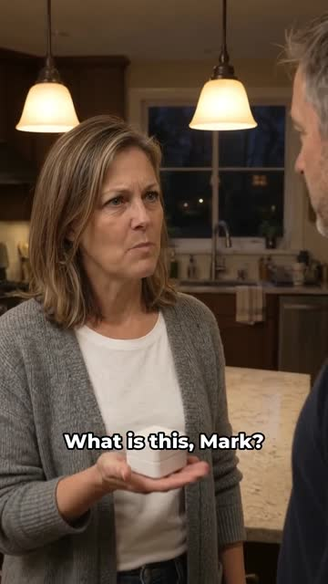<span class="bt"><span>00:00</span><span>HOOK</span></span><span class="bn">Accusation</span><span class="bq">“What is this, Mark?”</span></button>
              <button class="beat" type="button" data-t="4.4">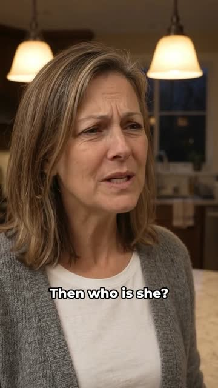<span class="bt"><span>00:04</span><span>CONFLICT</span></span><span class="bn">Raise the stakes</span><span class="bq">“Then who is she?”</span></button>
              <button class="beat" type="button" data-t="6.2">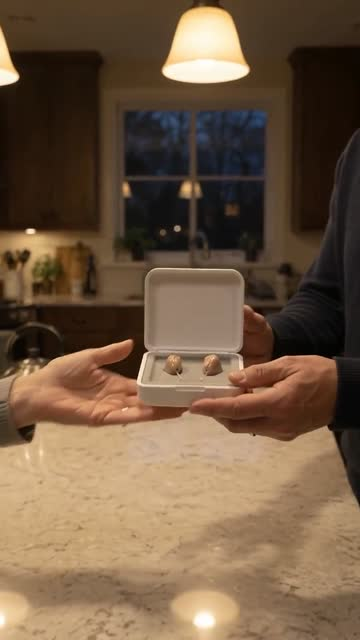<span class="bt"><span>00:06</span><span>TURN</span></span><span class="bn">Reveal</span><span class="bq">The box opens.</span></button>
              <button class="beat" type="button" data-t="18.6">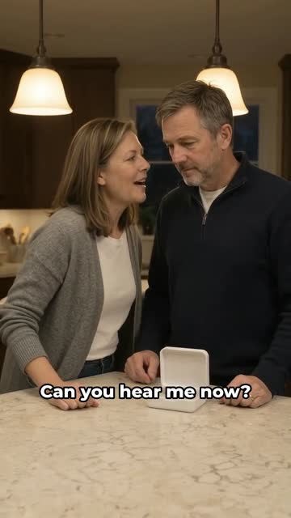<span class="bt"><span>00:18</span><span>PAYOFF</span></span><span class="bn">Proof</span><span class="bq">“Can you hear me now?”</span></button>
              <button class="beat" type="button" data-t="22.2">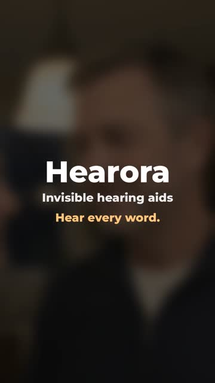<span class="bt"><span>00:22</span><span>PRODUCT</span></span><span class="bn">End card</span><span class="bq">Hear every word.</span></button>
            </div>
            <div class="lanes" aria-hidden="true">
              <div class="lane"><span>V1</span><span class="bar" style="--c:var(--clip-v);--w:12.5%"></span></div>
              <div class="lane"><span>A1</span><span class="bar" style="--c:var(--clip-a);--w:9%"></span></div>
            </div>
          </div>

          <p class="subh">How it was made</p>
          <dl class="steps">
            <div class="step"><dt>Script<small>01</small></dt><dd>Seven lines. Conflict on the first word, the turn at six seconds, the joke pays off at the end.</dd></div>
            <div class="step"><dt>Characters<small>02</small></dt><dd>Reference portraits for Diane and Mark, the kitchen and the product, reused in every generation so faces, light and box size stay the same.
              <div class="refs">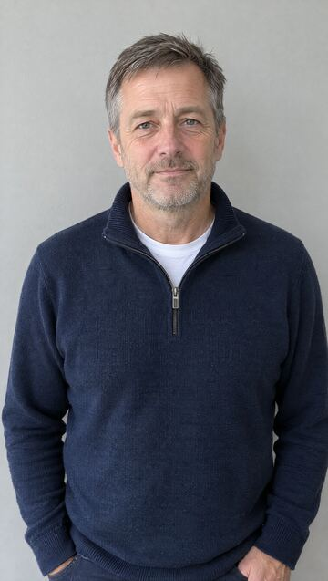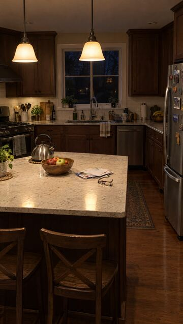</div></dd></div>
            <div class="step"><dt>Generate<small>03</small></dt><dd>Gemini Omni clips with native dialogue and lip-sync, several shots per clip. Re-shots used a video of earlier lines as the voice reference.</dd></div>
            <div class="step"><dt>QA<small>04</small></dt><dd>Whisper transcript against the script on every line. Voices matched across clips by pitch and tone. Story logic checked: the question comes only after the hearing aid is in.</dd></div>
            <div class="step"><dt>Edit<small>05</small></dt><dd>Cuts on the model's own shot changes, per-clip noise removal, one room tone underneath, captions in the safe zone, three hooks built on the same body.</dd></div>
          </dl>
        </div>
      </article>

      <!-- ===== Curlette ===== -->
      <article class="project" id="curlette">
        <div class="player">
          <div class="phone" data-player="curlette">
            <div class="screen">
              <span class="island" aria-hidden="true"></span>
              <video muted loop playsinline preload="metadata" poster="assets/curlette-main.jpg" src="assets/curlette-main.mp4" aria-label="Curlette ad"></video>
              <button class="sound" type="button" aria-pressed="false"><svg viewBox="0 0 24 24" fill="none" stroke="currentColor" stroke-width="2"><path d="M11 5 6 9H3v6h3l5 4z"/><path class="w" d="m16 9 5 6m0-6-5 6"/></svg><span>Tap for sound</span></button>
              <span class="tc" aria-hidden="true">00:00</span>
            </div>
          </div>
          <div class="tabs" role="tablist" aria-label="Curlette versions">
            <button class="tab" role="tab" aria-selected="true" data-src="curlette-main" data-note="Reply to a comment, with the result in the first second.">Reply to Carol</button>
            <button class="tab" role="tab" aria-selected="false" data-src="curlette-hook-hairdresser" data-note="Curiosity and social proof: her hairdresser asked.">The hairdresser</button>
          </div>
          <p class="tabnote" aria-live="polite">Reply to a comment, with the result in the first second.</p>
        </div>

        <div>
          <span class="tag">AI UGC</span>
          <h3>Curlette: “Reply to Carol”</h3>
          <p class="log">A follower asks if heatless curls really last all day. Rachel answers by pulling the satin rod out on camera, then checks in again at 6:04 PM with the curls still holding.</p>
          <div class="meta"><span>Women 35–55</span><span>Heatless curlers</span><span>16 s</span><span>9:16</span><span>Spec ad · invented brand</span></div>

          <p class="subh">Anatomy of the ad</p>
          <div class="track" data-for="curlette">
            <div class="ruler"><span>00:00</span><span>00:04</span><span>00:08</span><span>00:12</span><span>00:16</span></div>
            <div class="beats">
              <button class="beat" type="button" data-t="0">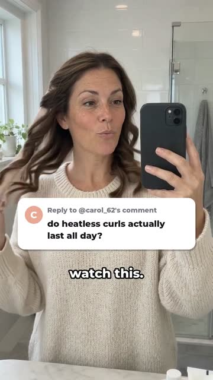<span class="bt"><span>00:00</span><span>HOOK</span></span><span class="bn">Result first</span><span class="bq">“Okay Carol… watch this.”</span></button>
              <button class="beat" type="button" data-t="3.4">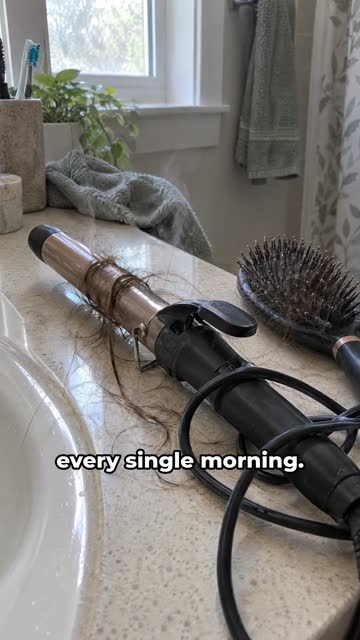<span class="bt"><span>00:03</span><span>PROBLEM</span></span><span class="bn">Old way</span><span class="bq">“I used to fry my hair…”</span></button>
              <button class="beat" type="button" data-t="5.4"><span class="bt"><span>00:05</span><span>METHOD</span></span><span class="bn">New way</span><span class="bq">“Now I sleep in this.”</span></button>
              <button class="beat" type="button" data-t="7.9">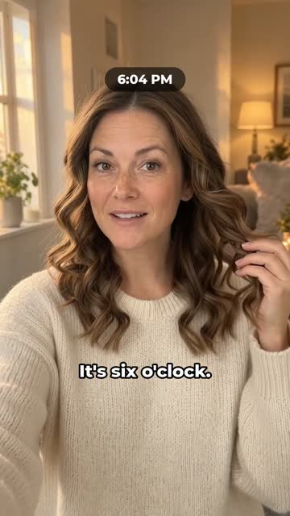<span class="bt"><span>00:08</span><span>PROOF</span></span><span class="bn">Still holding</span><span class="bq">“It's six o'clock.”</span></button>
              <button class="beat" type="button" data-t="14.2">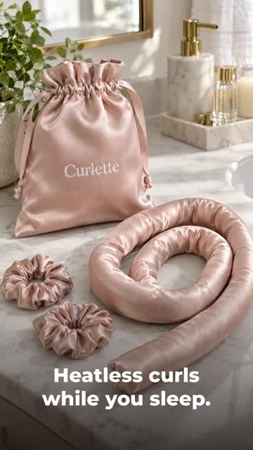<span class="bt"><span>00:14</span><span>PRODUCT</span></span><span class="bn">End card</span><span class="bq">Heatless curls while you sleep.</span></button>
            </div>
            <div class="lanes" aria-hidden="true">
              <div class="lane"><span>V1</span><span class="bar" style="--c:var(--clip-v);--w:18%"></span></div>
              <div class="lane"><span>A1</span><span class="bar" style="--c:var(--clip-a);--w:26%"></span></div>
            </div>
          </div>

          <p class="subh">How it was made</p>
          <dl class="steps">
            <div class="step"><dt>Script<small>01</small></dt><dd>Problem, method, proof, product, in sixteen seconds. Claims kept to what the product does: no heat.</dd></div>
            <div class="step"><dt>Characters<small>02</small></dt><dd>Morning and evening looks for Rachel made from one reference, so the face stays identical while the hair changes.
              <div class="refs">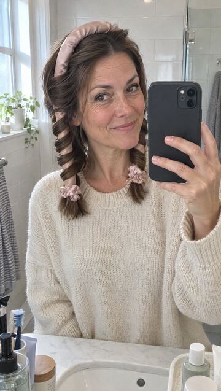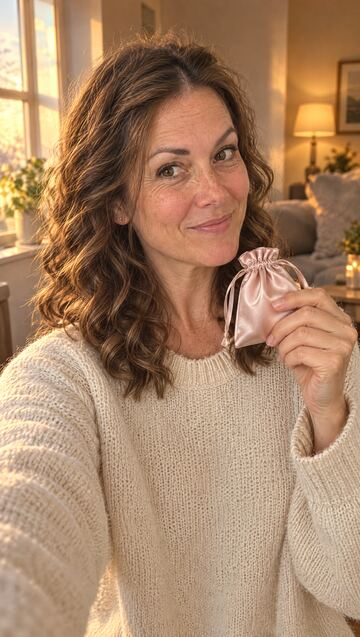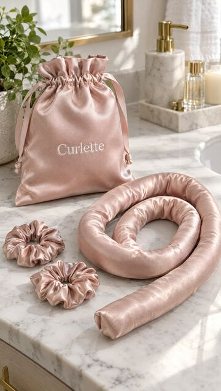</div></dd></div>
            <div class="step"><dt>Generate<small>03</small></dt><dd>Two talking clips with native voice. The evening clip used the morning clip as its voice reference. B-roll as photoreal stills with a slow push-in.</dd></div>
            <div class="step"><dt>QA<small>04</small></dt><dd>Comment bubble moved off her face so the unwrap stays visible. The last word re-pitched so it sounds final. Frame scan for flash frames at every cut.</dd></div>
            <div class="step"><dt>Edit<small>05</small></dt><dd>Comment bubble and 6:04 PM tag built in the edit, jump cuts hidden under B-roll, cross-dissolve into the end card.</dd></div>
          </dl>
        </div>
      </article>
    </div>
  </section>

  <section class="block" id="qa">
    <div class="wrap">
      <div class="shead">
        <div><div class="eyebrow">Quality control</div><h2>What I check before anything ships.</h2></div>
        <p>AI gives you footage. These checks turn it into an ad a brand can put money behind.</p>
      </div>
      <div class="qa">
        <div><b>Every word</b><p>Whisper transcript compared with the script, line by line. A misread word gets re-shot.</p></div>
        <div><b>Same person</b><p>Face, wardrobe and voice stay the same from first shot to last, measured, not guessed.</p></div>
        <div><b>Story logic</b><p>Actions happen in the right order, and the product looks the same size in every shot.</p></div>
        <div><b>Clean cuts</b><p>No flash frames, no caption spilling into the next shot, no dips to black.</p></div>
        <div><b>Safe zone</b><p>Captions and overlays clear of the app's buttons and never covering the key moment.</p></div>
        <div><b>Sound</b><p>Per-clip noise removal, one steady room tone, delivered at −14 LUFS.</p></div>
      </div>
    </div>
  </section>

  <section class="contact" id="contact">
    <div class="wrap">
      <div class="eyebrow">Contact</div>
      <h2>Let's make your next <em>winning ad.</em></h2>
      <div class="mailrow">
        <span class="mail" id="mail">mitrovic.m.marko00@gmail.com</span>
        <button class="btn" type="button" id="copy">Copy email</button>
        <a class="btn" href="https://www.linkedin.com/in/mitrovicmarko/" target="_blank" rel="noopener">LinkedIn</a>
        <span class="copied" id="copied" aria-live="polite"></span>
      </div>
      <p style="color:var(--muted);margin-top:22px">Based in Serbia. Working remotely, open to full-time roles.</p>
    </div>
  </section>
</main>

<footer>
  <div class="wrap">
    <span>© 2026 Marko Mitrovic</span>
    <span>Hearora and Curlette are invented brands. Both ads are spec work made in 2026 to show process and range.</span>
  </div>
</footer>

<script>
(function(){
  const fmt=t=>{t=Math.max(0,Math.floor(t));return String(Math.floor(t/60)).padStart(2,'0')+':'+String(t%60).padStart(2,'0')};
  const players=[...document.querySelectorAll('[data-player]')];
  const vids=players.map(p=>p.querySelector('video'));
  function setSound(btn,on){btn.setAttribute('aria-pressed',on);btn.querySelector('span').textContent=on?'Sound on':'Tap for sound';btn.querySelector('.w').style.display=on?'none':''}
  players.forEach(p=>{
    const v=p.querySelector('video'),btn=p.querySelector('.sound'),tc=p.querySelector('.tc');
    v.addEventListener('timeupdate',()=>{tc.textContent=fmt(v.currentTime)});
    btn.addEventListener('click',()=>{
      const on=v.muted;
      vids.forEach(o=>{if(o!==v){o.muted=true;const b=o.parentElement.querySelector('.sound');setSound(b,false)}});
      v.muted=!on; if(on){v.currentTime=0;v.play().catch(()=>{})}
      setSound(btn,on);
    });
  });
  // play only what is on screen
  if('IntersectionObserver' in window){
    const io=new IntersectionObserver(es=>es.forEach(e=>{const v=e.target;if(e.isIntersecting){v.play().catch(()=>{})}else{v.pause()}}),{threshold:.35});
    vids.forEach(v=>io.observe(v));
  }
  // hook tabs
  document.querySelectorAll('.project').forEach(pr=>{
    const v=pr.querySelector('video'),tabs=[...pr.querySelectorAll('.tab')],note=pr.querySelector('.tabnote');
    function show(tab,startAt){
      tabs.forEach(t=>t.setAttribute('aria-selected',t===tab));
      const s=tab.dataset.src;
      if(!v.src.endsWith('assets/'+s+'.mp4')){v.poster='assets/'+s+'.jpg';v.src='assets/'+s+'.mp4'}
      note.textContent=tab.dataset.note;
      const go=()=>{v.currentTime=startAt||0;v.play().catch(()=>{})};
      if(v.readyState>=1)go();else v.addEventListener('loadedmetadata',go,{once:true});
    }
    tabs.forEach(t=>t.addEventListener('click',()=>show(t,0)));
    pr.querySelectorAll('.beat').forEach(b=>b.addEventListener('click',()=>{
      pr.querySelectorAll('.beat').forEach(x=>x.classList.toggle('on',x===b));
      show(tabs[0],parseFloat(b.dataset.t));
      if(window.matchMedia('(max-width:860px)').matches)pr.querySelector('.player').scrollIntoView({behavior:'smooth',block:'start'});
    }));
  });
  // copy email
  const copy=document.getElementById('copy'),mail=document.getElementById('mail'),msg=document.getElementById('copied');
  copy.addEventListener('click',()=>{
    const done=()=>{msg.textContent='Copied';setTimeout(()=>msg.textContent='',2200)};
    if(navigator.clipboard){navigator.clipboard.writeText(mail.textContent.trim()).then(done,()=>{const r=document.createRange();r.selectNodeContents(mail);const s=getSelection();s.removeAllRanges();s.addRange(r);msg.textContent='Selected, press Ctrl+C'})}
  });
})();
</script>
